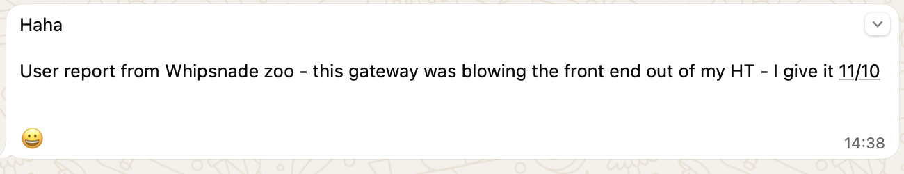

Leighton Buzzard AllStar Simplex Gateway
This gateway is usually connected to the FreeSTAR Network. You are welcome to unlink and move the gateway to a node of your choice:
Please listen for the single beep after disconnecting before initiating a new link to avoid network disturbance.
We receive some excellent signal reports from users across the area. This particular report really made us smile:
